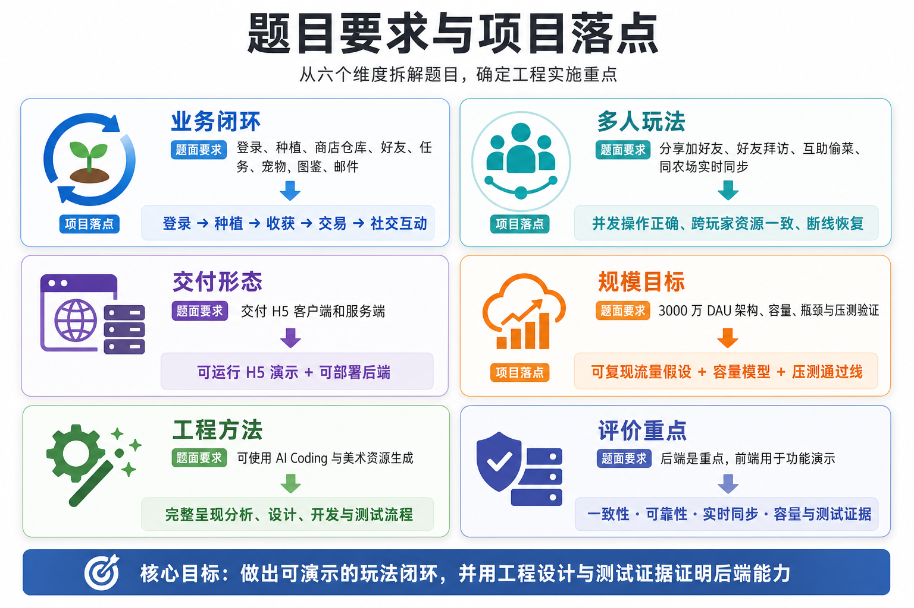
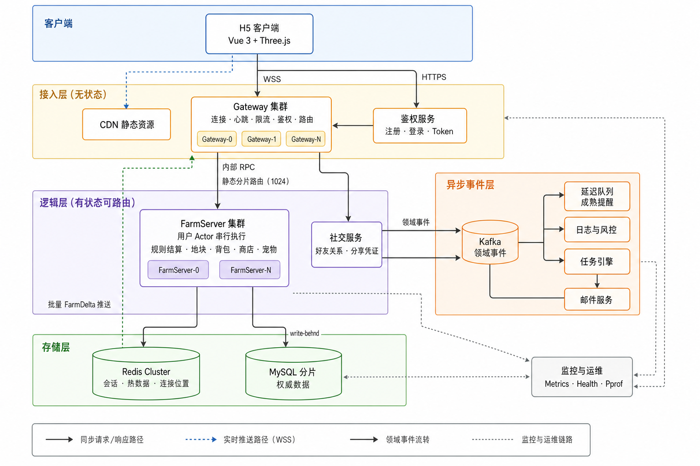
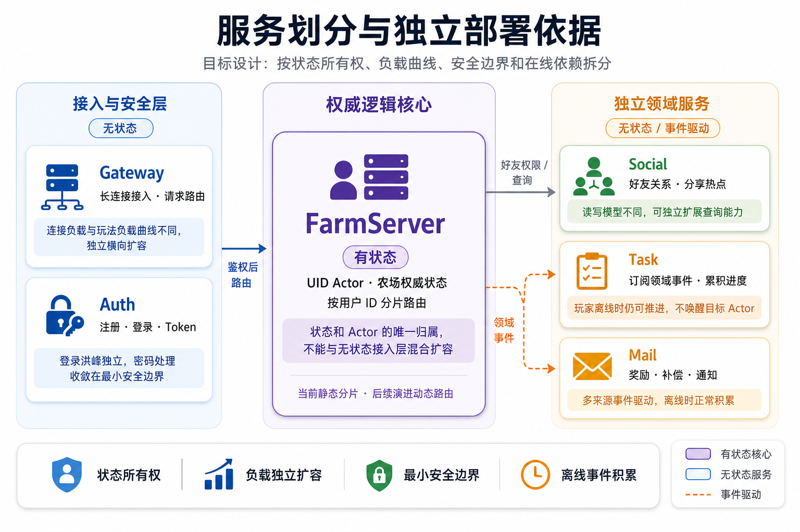
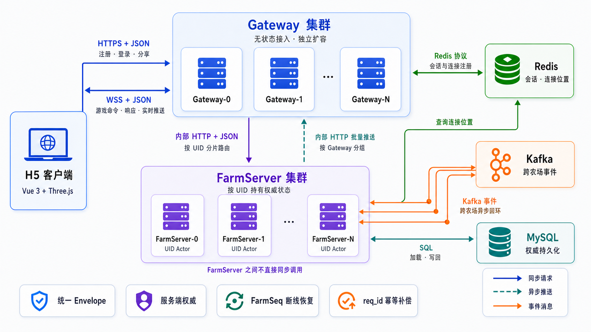

“客户端只能表达意图，
服务端必须产生结果。”
Classic Farm · Engineering Midterm
农场游戏
农场游戏
中期答辩
周本宽魔王工作室 / 狩项目组 / 服务器组实习生
本次答辩汇报项目的题目理解、系统架构、关键设计、实施计划和测试验证方案。
SCROLL TO EXPLORE
01 / 破题
题目不是“做农场”，而是处理时间、并发与资源。
QQ 农场式玩法看似简单，但其种植、收获和好友互动同时触及状态一致性、实时同步与资源安全。交付重点应落在完整且可验证的工程闭环。

02 / 六个难点
每一个工程决策，都对应一道真实的题目约束。
从“不能相信浏览器”到“不能用单机证明 DAU”，先厘清问题边界，再选择刚好够用的机制。
客户端不可信
价格、产量、成熟时间和奖励不能由 H5 上传。服务端根据存档、配置与服务器时间重新校验、结算。
作物持续成长
3,000 万用户 × 地块数量不能常驻定时器。访问时按持久化时间戳惰性推进，离线状态零运行时开销。
同农场并发修改
主人收获与多名好友操作会竞争同一状态。以 UID 为边界投入唯一 Actor 串行区，保证读取与提交的顺序。
跨农场资源变更
互助、偷菜同时影响访客与主人。通过预占、远程提交、回执结算和 req_id 幂等处理异常消息。
实时消息不可靠
广播可能乱序、丢失或在断线时中断。FarmSeq + DeltaRing 发现缺口后补齐增量，失效则回退快照。
DAU 不能直接压测
先推导 PCU、QPS、写入量与单机通过线，再通过逐层压测验证假设，并明确线性外推的边界。
03 / 总体架构由数据所有权决定边界，
由数据所有权决定边界，
由消息流动连接系统。
开发期可在一个进程运行 Gateway 与 FarmRuntime；部署形态则拆分 Gateway 与 FarmServer，保留静态逻辑分片与跨服务协作接口。
CLIENT只维护农场镜像，提交操作意图
GATEWAY持连接、鉴权、限流与 UID 路由
FARMSERVER权威规则、Actor 串行、状态变更
STORAGE热数据与权威数据各司其职

04 / 模块设计先按权威状态归属，
先按权威状态归属，
再按职责与负载特征拆分。
模块边界不是按页面或功能菜单划分，而是先保证同一玩家的权威状态在一个串行边界内；连接、认证与离线事件则按各自的扩缩容规律独立演进。

05 / 关键决策用约束换取简单，
用约束换取简单，
把复杂性放在必须处理的位置。
系统不追求“全都强一致”，而是按资源价值、操作范围和异常概率选择一致性策略。
D1客户端提交意图
商品、数量和地块可由客户端选择；价格、成熟时间、产量、经验与奖励一律由服务端配置和规则计算。
D2UID Actor 串行执行
农场、金币、仓库、任务等同一玩家状态进入一个 mailbox，消除单农场内的读改写竞争。
D3作物状态惰性推进
进入农场、同步或操作时才计算时间演进。重启后读取存档和当前时间即可确定性恢复。
D4持久化按风险分级
普通农场动作最长 30 秒合并写回；金币、背包和邮件附件等高价值资源同步事务落盘。
D5领域序列恢复镜像
FarmSeq 单调递增，Actor 保留最近 200 条 Delta。客户端优先补增量，无法补齐再获取快照。
D6补偿事务处理跨农场
访客预占 → 主人提交 → 访客结算；req_id 幂等、回执、超时回滚共同避免资源重复扣发。
06 / 通信协议先分层建立通信边界，
先分层建立通信边界，
再处理跨农场的异常路径。
客户端只通过 HTTPS 与 WebSocket 接入 Gateway；Gateway 负责鉴权与路由，不直接修改农场聚合。跨 FarmServer 的操作通过事件总线协作完成。

跨农场动作 · 三阶段结算
01 · VISITOR预占资源
→02 · OWNER校验并提交
→03 · VISITOR根据回执结算
→EXCEPTION超时补偿 / 回滚
req_id 贯穿整条链路：重复消息返回既有结果，网络超时后不会产生“扣了但没到账”的悬挂资源。
07 / 实施计划先把体验做完整，
先把体验做完整，
再把证据做扎实。
当前已完成工程骨架、种植循环、好友同步与社交玩法；下一阶段将集中回归、补齐 GM 能力，并用真实数据校准容量模型。
- PHASE 0–2
工程骨架与单人玩法
注册登录、快照恢复、种植循环、Actor、物品持久化与在线 Patch。
已完成 - PHASE 3–4
好友、同步与社交
分享加好友、房间订阅、FarmSeq + Delta、双 Gateway 与跨农场补偿。
已完成 - PHASE 5
可靠性补强
存储与重连加固、配置生成、可观测性和微基准。
已完成 - PHASE 6–7
GM 与集中回归
开发门控、目标农场视图、核心玩法端到端回归和缺陷闭环。
进行中 / 重点 - PHASE 8–9
容量验证与演进
阶梯压测、故障注入、Actor fencing、动态路由与分片迁移。
后续
08 / 测试策略从便宜到昂贵，
从便宜到昂贵，
从确定性到真实环境。
不把“跑起来”当作验证完成。测试层级分别证明规则、并发、多人闭环与故障性能，形成可定位的证据链。
规则正确
配置、严格 JSON、作物推进、经济、任务、宠物与补偿。验证状态流转和资源守恒。
并发与存储
Actor 串行、停机排水、MySQL 事务、Redis 回填。验证重载前后状态一致。
协议与多人闭环
乱序 Delta、重连、双客户端、双分片、重复消息。验证最终状态与结算唯一性。
故障与容量
kill 进程、慢存储、网络延迟、阶梯压测与稳态运行。验证恢复能力与性能拐点。
09 / 容量模型把“3000 万 DAU”
把“3000 万 DAU”
翻译成一次可执行的测试。
按人均日登录 4 次、每次 5 分钟、每次 30 个操作，并叠加高峰与 20% 余量，得出可校验的集群设计值和单实例通过线。
DAU 是业务指标；QPS、P99、错误率和稳定性才是工程证据。
单机压测不能直接等同于集群能力，因此将内部 RPC、跨机广播和尾延迟以 0.65 的集群折扣反推单实例通过线；随后逐层以实测数据替换模型假设。
10 / 讨论与请教
希望在答辩中进一步明确的问题。
以下问题用于校准后续的验证标准与演进方向，也欢迎老师结合经典农场类游戏的实际经验给予建议。
- 3000 万 DAU 应该验证到什么程度？单机测试怎样界定“容量设计已经得到有效验证”？
- 当前架构设计整体上是否合理，是否符合此类游戏的一般设计思路？
- 哪些地方需要优化改进？（目前我认为静态分片路由值得优先讨论）
NEXT / 继续推进从“架构合理”
从“架构合理”
走向“证据充分”。
- 集中回归与体验优化保证登录、种植、好友、任务邮件、图鉴与宠物稳定演示。
- 校准容量模型，定位瓶颈以阶梯压测、行为链机器人、稳态与故障演练替换推导假设。
- 推进演进能力补强并发安全、动态路由、分片迁移和 GM 控制台。